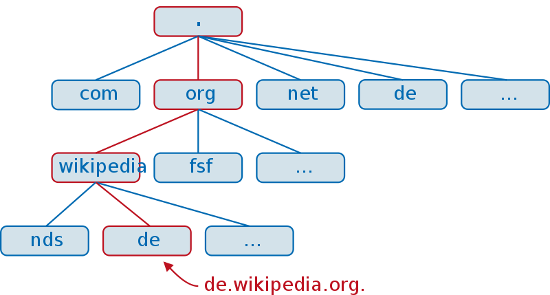
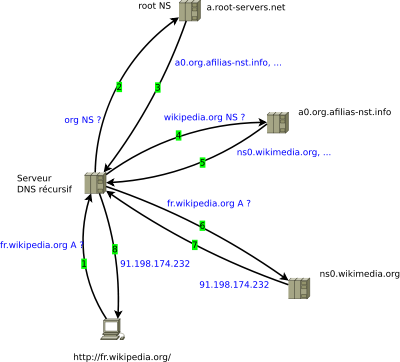

Service réseau - Service DNS, Domaine Name System
dominique huguenin (dominique.huguenin@rpn.ch) -Introduction
Le Domain Name System (ou DNS, système de noms de domaine) est un service permettant d’établir une correspondance entre une adresse IP et un nom de domaine et, plus généralement, de trouver une information à partir d’un nom de domaine.


Résolution itérative d’un nom dans le DNS par un serveur DNS (étapes 2 à 7) et réponse (étape 8) suite à l’interrogation récursive (étape 1) effectuée par un client (resolver) DNS. (remarque: Le serveur DNS récursif est dit récursif car il accepte ce type de requêtes mais il effectue des requêtes itératives).
Tirer de [5]
Hébergeur
La machine blossfeldtstad hébergera ce service.
Installation des paquets
sudo apt-get install bind9 dnsutils
Configuration
Fichiers de configuration
/
├── ...
├── etc
│ ├── ...
│ ├── network
│ │ └── interface
│ ├── ...
│ └── bind
│ ├── ...
│ ├── db.192.168.100 # zone inverse
│ ├── db.antiterre.lan # zone
│ ├── ...
│ ├── named.conf.local
│ ├── named.conf.options
│ └── ...
├── ...
└── var
└── log
├── ...
├── syslog # journal des services
└── ...
Configuration du transfert (forward)
sudo vim /etc/bind/named.conf.options
options {
directory "/var/cache/bind";
// If there is a firewall between you and nameservers you want
// to talk to, you may need to fix the firewall to allow multiple
// ports to talk. See http://www.kb.cert.org/vuls/id/800113
// If your ISP provided one or more IP addresses for stable
// nameservers, you probably want to use them as forwarders.
// Uncomment the following block, and insert the addresses replacing
// the all-0's placeholder.
forwarders {
157.26.166.16; # dns du cpne
157.26.166.17; # dns du cpne
8.8.8.8; # dns google
1.1.1.1;
};
//========================================================================
// If BIND logs error messages about the root key being expired,
// you will need to update your keys. See https://www.isc.org/bind-keys
//========================================================================
//dnssec-validation auto;
dnssec-validation no;
auth-nxdomain no; # conform to RFC1035
listen-on-v6 { any; };
rrset-order { order cyclic; };
};
Ajout d’un domaine primaire (primary zone)
dans /etc/bind/named.conf.local ajout d’une nouvelle zone antiterre.lan
...
zone "antiterre.lan" {
type master;
file "/etc/bind/db.antiterre.lan";
};
...
sudo cp /etc/bind/db.local /etc/bind/db.antiterre.lan
Dans /etc/bind/db.antiterre.lan remplacer :
- localhost. par ns1.antiterre.lan.
- root.localhost. par root.antiterre.lan.
- Comme paramètre à Serial la date de la configuration YYYYMMDDHH
- fixe la bonne adresse IP
;
; BIND data file for local loopback interface
;
$TTL 604800
@ IN SOA ns1.antiterre.lan. root.antiterre.lan. (
2014103001 ; Serial
604800 ; Refresh
86400 ; Retry
2419200 ; Expire
604800 ) ; Negative Cache TTL
;
@ IN NS ns1.antiterre.lan.
@ IN A 192.168.100.10
ns1 IN A 192.168.100.10
blossfeldtstad IN CNAME ns1
Reverse Zone File
-
Dans
/etc/bind/named.conf.localajouter d’une nouvelle zone 100.168.192.in-addr.arpa... zone "100.168.192.in-addr.arpa" { type master; notify no; file "/etc/bind/db.192.168.100"; }; ... -
Créer le fichier
/etc/bind/db.192.168.100sudo cp /etc/bind/db.127 /etc/bind/db.192.168.100 -
Modifier le fichier
/etc/bind/db.192.168.100; ; BIND reverse data file for local loopback interface ; $TTL 604800 @ IN SOA ns1.antiterre.lan. root.antiterre.lan. ( 2014103001 ; Serial 604800 ; Refresh 86400 ; Retry 2419200 ; Expire 604800 ) ; Negative Cache TTL ; @ IN NS ns1. 10 IN PTR ns1.antiterre.lan. -
Validation des zones dns
$ named-checkzone antiterre.lan /etc/bind/db.antiterre.lan zone antiterre.lan/IN: loaded serial 2014103001 OK$ named-checkzone antiterre.lan /etc/bind/db.192.168.100 zone antiterre.lan/IN: loaded serial 2014103001 OK
Redémarrage du service DNS
debian@blossfeldtstad:~$ sudo systemctl restart bind9
debian@blossfeldtstad:~$ sudo systemctl status bind9
● bind9.service - BIND Domain Name Server
Loaded: loaded (/lib/systemd/system/bind9.service; enabled; vendor preset: enabled)
Active: active (running) since Tue 2019-04-02 08:47:43 UTC; 4s ago
Docs: man:named(8)
Process: 1644 ExecStop=/usr/sbin/rndc stop (code=exited, status=0/SUCCESS)
Main PID: 1678 (named)
Tasks: 11 (limit: 4915)
CGroup: /system.slice/bind9.service
└─1678 /usr/sbin/named -f -u bind
avr 02 08:47:43 blossfeldtstad named[1678]: managed-keys-zone: journal file is out of date: rem
avr 02 08:47:43 blossfeldtstad named[1678]: managed-keys-zone: loaded serial 2
avr 02 08:47:43 blossfeldtstad named[1678]: zone 0.in-addr.arpa/IN: loaded serial 1
avr 02 08:47:43 blossfeldtstad named[1678]: zone 127.in-addr.arpa/IN: loaded serial 1
avr 02 08:47:43 blossfeldtstad named[1678]: zone 100.168.192.in-addr.arpa/IN: loaded serial 201
avr 02 08:47:43 blossfeldtstad named[1678]: zone localhost/IN: loaded serial 2
avr 02 08:47:43 blossfeldtstad named[1678]: zone 255.in-addr.arpa/IN: loaded serial 1
avr 02 08:47:43 blossfeldtstad named[1678]: zone antiterre.lan/IN: loaded serial 2019040200
avr 02 08:47:43 blossfeldtstad named[1678]: all zones loaded
avr 02 08:47:43 blossfeldtstad named[1678]: running
lines 1-20/20 (END)
information
$ sudo journalctl -u namedpermet de consulter les messages du service DNS.
test
dig est un programme informatique de débogage de serveurs DNS. Il signifie Domain Information Groper, littéralement Chercheur d’Information sur les Domaines.[6]
-
Interroge le service DNS du serveur 192.168.100.10 (@192.168.100.10)
$ dig @192.168.100.10 antiterre.lan ; <<>> DiG 9.9.5-3-Ubuntu <<>> @192.168.100.10 antiterre.lan ; (1 server found) ;; global options: +cmd ;; Got answer: ;; ->>HEADER<<- opcode: QUERY, status: NOERROR, id: 47222 ;; flags: qr aa rd ra; QUERY: 1, ANSWER: 1, AUTHORITY: 1, ADDITIONAL: 2 ;; OPT PSEUDOSECTION: ; EDNS: version: 0, flags:; udp: 4096 ;; QUESTION SECTION: ;antiterre.lan. IN A ;; ANSWER SECTION: antiterre.lan. 604800 IN A 192.168.100.10 ;; AUTHORITY SECTION: antiterre.lan. 604800 IN NS ns1.antiterre.lan. ;; ADDITIONAL SECTION: ns1.antiterre.lan. 604800 IN A 192.168.100.10 ;; Query time: 4 msec ;; SERVER: 192.168.100.10#53(192.168.100.10) ;; WHEN: Thu Oct 30 14:33:10 CET 2014 ;; MSG SIZE rcvd: 92$ dig @192.168.100.10 100.168.192.in-addr.arpa AXFR ; <<>> DiG 9.9.5-3-Ubuntu <<>> @192.168.100.10 100.168.192.in-addr.arpa AXFR ; (1 server found) ;; global options: +cmd 100.168.192.in-addr.arpa. 604800 IN SOA ns1.antiterre.lan. root.antiterre.lan. 2014103001 604800 86400 2419200 604800 100.168.192.in-addr.arpa. 604800 IN NS ns1. 10.100.168.192.in-addr.arpa. 604800 IN PTR ns1.antiterre.lan. 100.168.192.in-addr.arpa. 604800 IN SOA ns1.antiterre.lan. root.antiterre.lan. 2014103001 604800 86400 2419200 604800 ;; Query time: 2 msec ;; SERVER: 192.168.100.10#53(192.168.100.10) ;; WHEN: Thu Oct 30 14:33:57 CET 2014 ;; XFR size: 4 records (messages 1, bytes 170)$ dig @192.168.100.10 ns1.antiterre.lan ; <<>> DiG 9.9.5-3-Ubuntu <<>> @192.168.100.10 ns1.antiterre.lan ; (1 server found) ;; global options: +cmd ;; Got answer: ;; ->>HEADER<<- opcode: QUERY, status: NOERROR, id: 30800 ;; flags: qr aa rd ra; QUERY: 1, ANSWER: 1, AUTHORITY: 1, ADDITIONAL: 1 ;; OPT PSEUDOSECTION: ; EDNS: version: 0, flags:; udp: 4096 ;; QUESTION SECTION: ;ns1.antiterre.lan. IN A ;; ANSWER SECTION: ns1.antiterre.lan. 604800 IN A 192.168.100.10 ;; AUTHORITY SECTION: antiterre.lan. 604800 IN NS ns1.antiterre.lan. ;; Query time: 0 msec ;; SERVER: 192.168.100.10#53(192.168.100.10) ;; WHEN: Thu Oct 30 14:34:55 CET 2014 ;; MSG SIZE rcvd: 76$ dig @192.168.100.10 www.google.ch ; <<>> DiG 9.9.5-3-Ubuntu <<>> @192.168.100.10 www.google.ch ; (1 server found) ;; global options: +cmd ;; Got answer: ;; ->>HEADER<<- opcode: QUERY, status: NOERROR, id: 13583 ;; flags: qr rd ra; QUERY: 1, ANSWER: 4, AUTHORITY: 13, ADDITIONAL: 19 ;; OPT PSEUDOSECTION: ; EDNS: version: 0, flags:; udp: 4096 ;; QUESTION SECTION: ;www.google.ch. IN A ;; ANSWER SECTION: www.google.ch. 158 IN A 173.194.116.88 www.google.ch. 158 IN A 173.194.116.87 www.google.ch. 158 IN A 173.194.116.79 www.google.ch. 158 IN A 173.194.116.95 ... ;; Query time: 1211 msec ;; SERVER: 192.168.100.10#53(192.168.100.10) ;; WHEN: Thu Oct 30 14:35:31 CET 2014 ;; MSG SIZE rcvd: 665 -
test la résolution inverse
$ dig @192.168.100.10 -x 192.168.100.10 ; <<>> DiG 9.9.5-3-Ubuntu <<>> @192.168.100.10 -x 192.168.100.10 ; (1 server found) ;; global options: +cmd ;; Got answer: ;; ->>HEADER<<- opcode: QUERY, status: NOERROR, id: 18740 ;; flags: qr aa rd ra; QUERY: 1, ANSWER: 1, AUTHORITY: 1, ADDITIONAL: 1 ;; OPT PSEUDOSECTION: ; EDNS: version: 0, flags:; udp: 4096 ;; QUESTION SECTION: ;10.100.168.192.in-addr.arpa. IN PTR ;; ANSWER SECTION: 10.100.168.192.in-addr.arpa. 604800 IN PTR ns1.antiterre.lan. ;; AUTHORITY SECTION: 100.168.192.in-addr.arpa. 604800 IN NS ns1. ;; Query time: 2 msec ;; SERVER: 192.168.100.10#53(192.168.100.10) ;; WHEN: Thu Oct 30 14:37:13 CET 2014 ;; MSG SIZE rcvd: 104
Configurer le serveur DNS (netplan)
-
Dans une configuration réseau statique faite dans
/etc/netplan/*.yamlnetwork: version: 2 renderer: networkd ethernets: enp3s0: ... nameservers: search: - antiterre.lan addresses: - 192.168.100.10
Ajout de noms d’hôte
-
Dans le fichier
/etc/bind/db.antiterre.lanajouter:... ntp1 IN CNAME ns1 ; alias pour le service de temps galatograd IN A 192.168.100.20 urbicande IN A 192.168.100.30 ... -
Dans le fichier
/etc/bind/db.192.168.100ajouter:... 20 IN PTR galatograd.antiterre.lan. 30 IN PTR urbicande.antiterre.lan. ... -
vérification de la syntax
$ named-checkzone antiterre.lan /etc/bind/db.antiterre.lan zone antiterre.lan/IN: loaded serial 20101229 OK$ named-checkzone antiterre.lan /etc/bind/db.192.168.100 zone antiterre.lan/IN: loaded serial 20101229 OK -
Redémarrer le service
sudo systemctl restart named -
tester avec
nslookup$ nslookup antiterre.lan Server: 192.168.100.10 Address: 192.168.100.10#53 Name: antiterre.lan Address: 192.168.100.10$ nslookup blossfeldtstad.antiterre.lan Server: 192.168.100.10 Address: 192.168.100.10#53 blossfeldtstad.antiterre.lan canonical name = ns1.antiterre.lan. Name: ns1.antiterre.lan Address: 192.168.100.10$ nslookup galatograd.antiterre.lan Server: 192.168.100.10 Address: 192.168.100.10#53 Name: galatograd.antiterre.lan Address: 192.168.100.20$ nslookup urbicande.antiterre.lan Server: 192.168.100.10 Address: 192.168.100.10#53 Name: urbicande.antiterre.lan Address: 192.168.100.30 -
tester la résolution inverse
$ nslookup 192.168.100.10 Server: 192.168.100.10 Address: 192.168.100.10#53 10.100.168.192.in-addr.arpa name = ns1.antiterre.lan.$ nslookup 192.168.100.20 Server: 192.168.100.10 Address: 192.168.100.10#53 20.100.168.192.in-addr.arpa name = galatograd.antiterre.lan.$ nslookup 192.168.100.30 Server: 192.168.100.10 Address: 192.168.100.10#53 30.100.168.192.in-addr.arpa name = urbicande.antiterre.lan.
information
Post-configuration
- Pour une configuration statique des paramètres réseau , ajouter l’adresse du DNS dans le fichier de configuration du réseau
- Pour une configuration réseau distribué par le DHCP, mettre à jour l’adresse du DNS dans le service DHCP
Vérification de la configuration courant du DNS
debian@galatograd:~$ systemd-resolve --status --no-pager
Global
DNSSEC NTA: 10.in-addr.arpa
16.172.in-addr.arpa
168.192.in-addr.arpa
17.172.in-addr.arpa
18.172.in-addr.arpa
19.172.in-addr.arpa
20.172.in-addr.arpa
21.172.in-addr.arpa
22.172.in-addr.arpa
23.172.in-addr.arpa
24.172.in-addr.arpa
25.172.in-addr.arpa
26.172.in-addr.arpa
27.172.in-addr.arpa
28.172.in-addr.arpa
29.172.in-addr.arpa
30.172.in-addr.arpa
31.172.in-addr.arpa
corp
d.f.ip6.arpa
home
internal
intranet
lan
local
private
test
Link 20 (eth0)
Current Scopes: DNS
LLMNR setting: yes
MulticastDNS setting: no
DNSSEC setting: no
DNSSEC supported: no
DNS Servers: 192.168.100.10
DNS Domain: antiterre.lan
debian@galatograd:~$ resolvectl status --no-pager
Global
LLMNR setting: no
MulticastDNS setting: no
DNSOverTLS setting: no
DNSSEC setting: no
DNSSEC supported: no
DNSSEC NTA: 10.in-addr.arpa
16.172.in-addr.arpa
168.192.in-addr.arpa
17.172.in-addr.arpa
18.172.in-addr.arpa
19.172.in-addr.arpa
20.172.in-addr.arpa
21.172.in-addr.arpa
22.172.in-addr.arpa
23.172.in-addr.arpa
24.172.in-addr.arpa
25.172.in-addr.arpa
26.172.in-addr.arpa
27.172.in-addr.arpa
28.172.in-addr.arpa
29.172.in-addr.arpa
30.172.in-addr.arpa
31.172.in-addr.arpa
corp
d.f.ip6.arpa
home
internal
intranet
lan
local
private
test
Link 37 (eth0)
Current Scopes: DNS
DefaultRoute setting: yes
LLMNR setting: yes
MulticastDNS setting: no
DNSOverTLS setting: no
DNSSEC setting: no
DNSSEC supported: no
Current DNS Server: 192.168.100.10
DNS Servers: 192.168.100.10
DNS Domain: antiterre.lan
Commandes
dig
DIG(1) BIND9 DIG(1)
NAME
dig - DNS lookup utility
SYNOPSIS
dig [@server] [-b address] [-c class] [-f filename] [-k filename] [-m]
[-p port#] [-q name] [-t type] [-x addr] [-y [hmac:]name:key] [-4]
[-6] [name] [type] [class] [queryopt...]
dig [-h]
dig [global-queryopt...] [query...]
nslookup
NSLOOKUP(1) BIND9 NSLOOKUP(1)
NAME
nslookup - query Internet name servers interactively
SYNOPSIS
nslookup [-option] [name | -] [server]
Références
- BIND | Internet Systems Consortium, http://www.isc.org/software/bind
- Ubuntu Documentation - Service de nom de domaine (DNS), https://help.ubuntu.com/16.04/serverguide/dns.html
- DNS HOWTO (français), http://www.ibiblio.org/pub/linux/docs/howto/translations/fr/html-1page/DNS-HOWTO.html
- Wikipedia - Domain Name System, http://fr.wikipedia.org/wiki/Domain_Name_System
- Wikipedia - dig (programme informatique), http://fr.wikipedia.org/wiki/Dig_%28programme_informatique%29
- rfc1033 - DOMAIN ADMINISTRATORS OPERATIONS GUIDE, http://tools.ietf.org/html/rfc1033